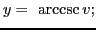
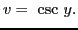
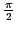
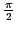
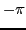
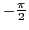
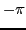
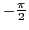
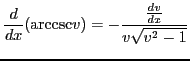

Let

then

This function is defined for all values of  except those lying between
except those lying between  and
and  ,
and is seen to be many-valued. To make the function single-valued,
,
and is seen to be many-valued. To make the function single-valued,  is taken as the
arc of smallest numerical value whose cosecant is . This means that if is positive,
we confine ourselves to points on the arc
is taken as the
arc of smallest numerical value whose cosecant is . This means that if is positive,
we confine ourselves to points on the arc  (Figure 5.11), taking
on values between 0 and
 (
may be included);
and if is negative, we confine ourselves to points on the arc
(Figure 5.11), taking
on values between 0 and
 (
may be included);
and if is negative, we confine ourselves to points on the arc  , taking on
values between  and
 (
may be included).
, taking on
values between  and
 (
may be included).
Figure 5.11:
The inverse secant function
using SAGE.
|
Figure 5.12:
The standard branch of
using SAGE.
|
Differentiating with respect to by XVI and following the method of
the last section, we get

(equation (XXIII) in §5.1 above).
david joyner
2008-08-11